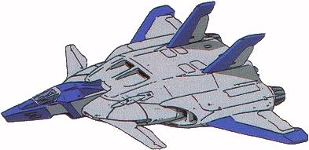

| Jet Core Booster |
|
|  | |
General and Technical Data |
|
|
Unit type: light fighter/bomber Armament: 50mm anti-tank cannon; 4 x 25mm machinegun; 2x 2-tube missile launcher, 1 round; 1x hardpoint, mounts missile, large bomb or fuel cell |
|
| Technical and Historical Notes | |
|
The original Core Booster unit, developed to assist the three Project V prototypes onboard the White Base, showed considerable promise as modern fighter aircraft. It was, however, far too expensive to mass produce; its onboard reactor and complicated Core Fighter joining systems proved entirely too difficult to build in any significant numbers. To this extent, the Jet Core Booster was laid out.
The Jet Core Booster is a significant simplification of the original design. The dedicated Fighter and Booster sections have been sandwiched into a single unit. The rocket engines have been replaced with traditional jets, cutting down on weight and cost. Other features, such as the onboard reactor and mega particle guns were also removed, making it more or less a conventional aircraft. The Federation's usual armament of quadruple 25mm machineguns was maintained in the Jet Core Booster design. The anti-aircraft missiles of the core fighter were retained, albeit with a smaller ammunition capacity. A large 50mm anti-tank cannon was added on the left side, giving it a bit more punch against Zeon mobile suits. Finally, to asisst in the light bomber role, a single large bomb could be affixed to the undercarriage; this would usually be used in a dive-bombing function, rather than the flat-line carpet bombing of the Depp Rog.
Dive Bomber |